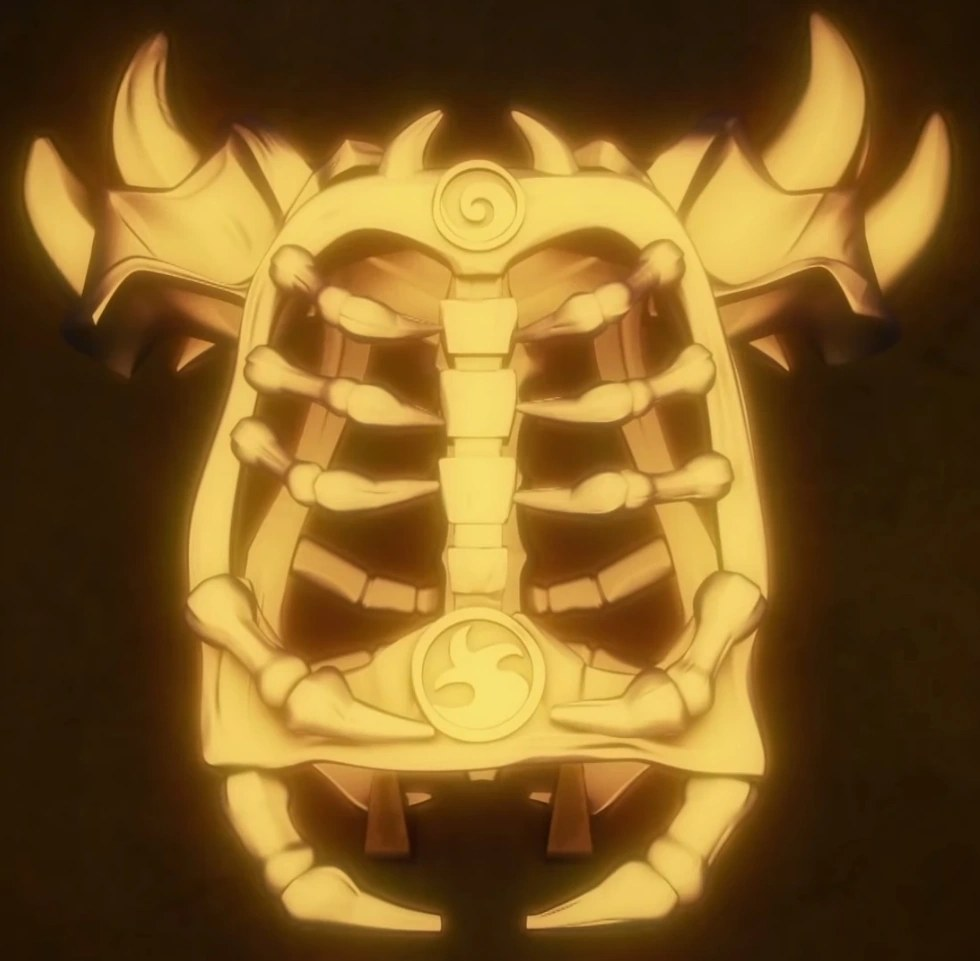

The Golden Armor
The Armor of the First Spinjitzu Master — the Golden Weapons and the Mega Weapon's remains, melted down and reforged into a single being's invincibility. It repels the dark, endows the First Master's power, and nearly ended the world in the Overlord's hands. It was made for a tyrant. It is still waiting for one.

The Golden Armor
Metaphysical Law: Power worn is power owed.
Properties & techniques
Exact player-facing procedures
Field notes. Subject: invincibility, with terms. Three truths govern it. First: the Armor does not protect the wearer — it replaces the wearer's mortality with the First Spinjitzu Master's. Near-Invincibility is not damage reduction; it is a change of category, and the category is "being the person who created the world." This is why single attacks under a threshold simply do not register: the Armor cannot conceive of them. Second: the Oni-ward is the Armor's oldest function. It kept the Oni away from Lloyd and Garmadon not by fighting them but by being metaphysically incompatible with them — darkness cannot approach the concentrated fact of creation. The ward is passive, absolute, and indiscriminate: it repels the dark whether you want it to or not, which includes dark-aligned allies. Third: the corruption is the price, and it is not a curse laid on the Armor afterward. The Nindroids forged it for the Overlord; the Armor's idea of a rightful wearer is a tyrant. Every dawn it checks whether you are becoming one. It is patient. It has time.
Relic profile
AC 22 (golden plate, resizes to the wearer) · attunement 1 hour · occupies the body slot
Jujutsu origin
The Nindroids melted the Golden Weapons and the Mega Weapon's remains and forged the Armor of the First Spinjitzu Master — the concentrated creative authority of a world-maker, wearable. When the Overlord donned it, he became the Golden Master: nearly invincible, wreaking havoc across New Ninjago City until Zane's sacrifice broke him. The jujutsu reading: this is what happens when creation stops being an act and becomes a garment. The power is real. The garment remembers who it was cut for.
Near-Invincibility
While worn, you have resistance to all damage, immunity to critical hits, and any single attack dealing less than 50 damage cannot reduce you below 1 HP. You are immune to the frightened condition while wearing the Armor — fear is a mortal luxury.
Oni-Ward
Beings of darkness — fiends, shadow creatures, Oni-like entities, the GM judges — cannot willingly come within 30 ft of you, and have disadvantage on attacks against you. This ward is indiscriminate: it repels dark-aligned allies as well. The Armor does not take sides within the light; it takes the light's side against everything else.
Golden Power — Action
Channel the First Master's authority. Your melee attacks deal an additional 3d10 radiant damage until the end of your next turn, or fire a bolt of golden power at a creature within 120 ft: 4d10 radiant damage, no attack roll required (DEX save vs your Relic DC for half).
The Corruption — Made for the Overlord
Each dawn, make a WIS save vs your Relic DC. On a failure, gain 1 Corruption. While you have Corruption, you have disadvantage on checks to persuade or show mercy, and advantage on Intimidation. At 3 Corruption, your alignment shifts one step toward tyranny (GM's judgment) and the Armor cannot be removed except by wish-level magic — it has decided you are its Overlord. Corruption is removed only by a genuine act of refused power: surrendering an advantage, sparing an enemy at cost to yourself, the GM judges. The Armor is patient. It has time.
Single Being
The Armor resizes to fit exactly one wearer and accepts exactly one attunement. While you are attuned, no other creature can attune the Armor, wear it effectively (it is inert plate in other hands), or benefit from its properties. The First Master's power was never meant to be shared.
Cursed-tool attunement
Campaign canon